Community-Based Natural Resource Management
We work with communities to develop and implement initiatives that give them a real say in managing their natural resources — improving livelihoods and conservation outcomes alike.
Ecosystem Conservation 4 Livelihood Improvement
At ECoLIve, green isn't just our brand colour — it's our way of life. We protect nature to improve the lives of the people who depend on it most.
Who We Are
Ecosystem Conservation 4 Livelihood Improvement (ECoLIve) is a result-driven non-profit and a leading organisation in environmental conservation for livelihood improvement. Our programs have a significant impact on the communities we serve, and we continue to play a vital role in promoting sustainable development across Kenya.
Our identity is rooted in the belief that human livelihoods and environmental health are inextricably linked. We don't just protect nature for its own sake — we protect it to improve the lives of the people who depend on it most.
"Join us as we restore, conserve, and empower. It's our purpose, a gift we must preserve."
To end the poverty cycle in Kenya by addressing climate change through nature-based solutions.
To empower the poorest, most neglected communities in remote and marginal areas through management of natural resources and sustainable agriculture — to adapt and build resilience to the impacts of climate change.
Building self-reliance and agency within local communities.
Ensuring long-term viability through ecological and economic balance.
Engaging all stakeholders, especially marginalised groups, in decision-making.
Partnering with relevant stakeholders for enhanced impact.
Respecting, preserving and promoting local traditions and knowledge systems.
Our Core Strategy
We manage entire watersheds as single functional units — because the health of our hilltop forests and inland farmlands directly dictates the health of our rivers and coastal mangrove ecosystems.
Hilltop forests & catchment areas restored and protected.
Climate-smart farmlands that nourish people and soil.
Healthy watersheds carrying clean water downstream.
Thriving coastal mangroves and a future protected at sea.
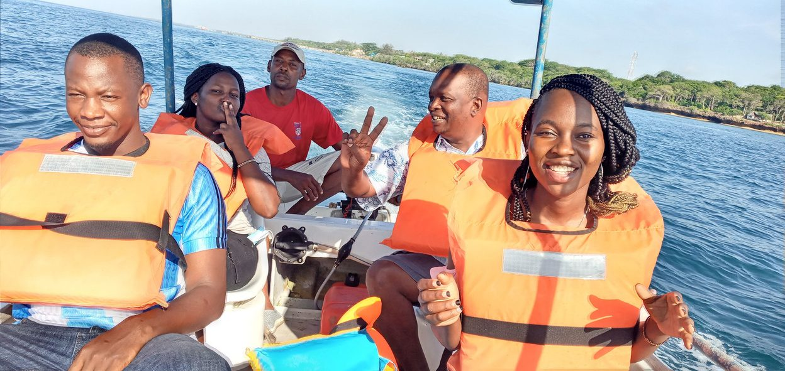
What Guides Us
We work with communities to develop and implement initiatives that give them a real say in managing their natural resources — improving livelihoods and conservation outcomes alike.
We help communities adapt to impacts such as drought and flooding, while supporting them to mitigate climate change by reducing their greenhouse gas emissions.
We work with farmers to adopt sustainable agricultural practices that improve food security and build resilience to a changing climate.
What We Do
We support communities to establish and manage community forests — providing access to forest resources and income opportunities while improving conservation outcomes.
CFMWe help farmers adopt CSA practices such as agroforestry and water harvesting, helping them adapt to climate impacts and improve their food security.
CSAWe help communities develop and manage ecotourism enterprises that generate income while conserving the natural resources around them.
CBEHow We Work
We conduct comprehensive research to understand local environmental challenges, vulnerabilities, and community needs — assessing existing resources, skills and cultural practices to inform program design.
We design life-changing programs tailored to specific community needs, develop culturally sensitive livelihood schemes, and introduce resource-efficient technologies for climate-smart agriculture, water conservation and renewable energy.
We provide training and resources to build local capacity for implementation and income generation, fostering leadership skills and empowering communities to participate in decision-making.
We partner with government agencies, NGOs, academic institutions and the private sector to leverage expertise — and foster collaboration between communities to share best practices.
We continuously monitor and evaluate effectiveness, adapt strategies based on evidence, and ensure transparency and accountability through regular reporting and stakeholder engagement.
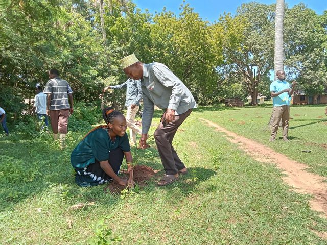
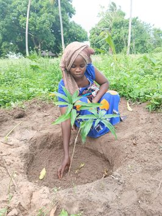
A Word From Our Founder
True environmental sustainability is inseparable from social justice. At Ecolive254, we are not just planting trees; we are nurturing a movement where every community has a voice in the governance of their natural resources.
"We've intensified our advocacy for Climate Justice. We are pushing for policies that protect the most vulnerable populations in Kenya from the triple planetary crisis — climate change, biodiversity loss, and pollution. We believe that a Just Transition must prioritise smallholder farmers and marginalised groups."
— Founder, ECoLIve Kenya
From the Field
Our 2026 campaign encourages everyone to plant one tree per day. Whether an ornamental tree in an urban compound or a fruit tree on a rural farm, every single planting contributes to our collective goal of 366 trees a year.
We trained 44 community members to run tree nurseries — then linked them directly to markets, turning seedlings into real income. See the spotlight →
We supported a women's group (29 women, 10 youths, 9 men) that had operated unregistered for six months — not for lack of funds, but lack of confidence. By reinforcing belief in their own capability, they secured their official registration certificate.
Spotlight
Through our specialised training on tree-nursery establishment and management, community members have become experts in nurturing life from the ground up. But we don't stop at the nursery gate — we link these local producers directly to markets, ensuring their hard work translates into real economic empowerment and financial stability.
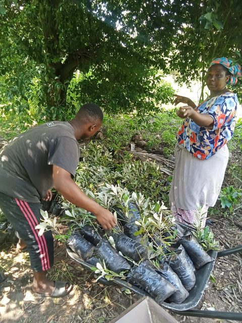
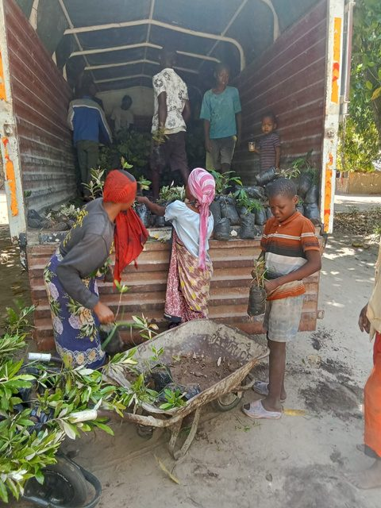
Spoken Words
I planted my trees with love and care,
In my heart, for my beautiful women here.
With patience and honesty, we help them grow,
Watching them flourish, in a vibrant show.
Elders will rest beneath the cool, green shade,
Enjoying the peace, a haven made.
This is our important call, you see —
From the plants and women, helping nature be.
Come join us, help restore and conserve,
It's our purpose, a gift we must preserve.
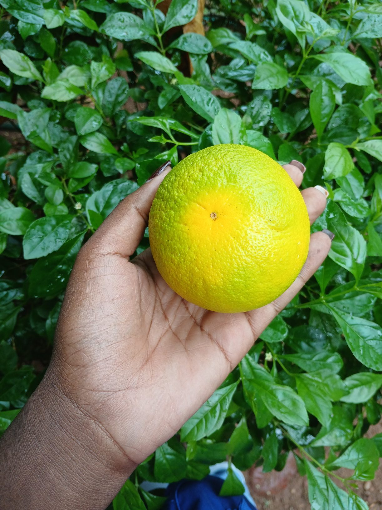
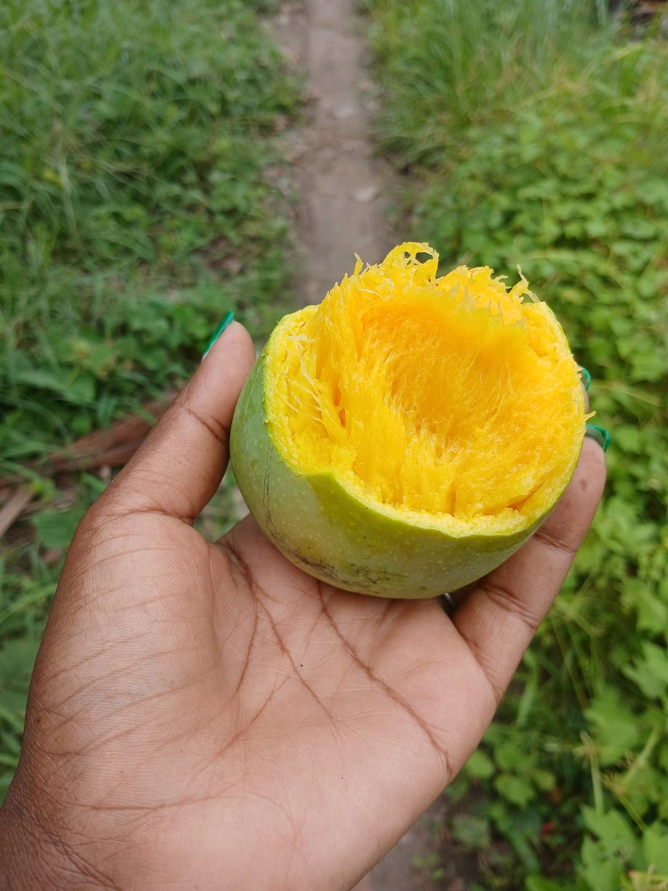
News & Updates
Projects, milestones and field stories from our work across Kenya.

Showcasing the initiatives where communities and their natural surroundings thrive together — our journey toward a sustainable, greener future.
Read more →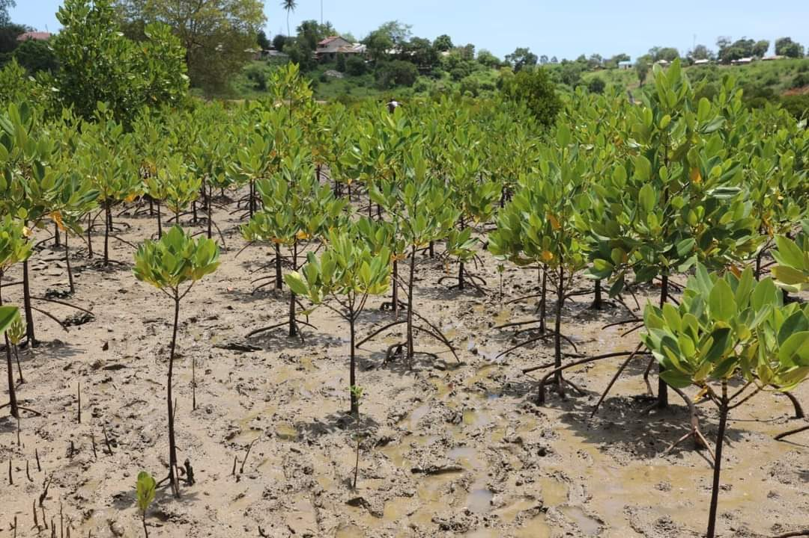
A call to restore the coastal mangrove forests that protect our shoreline, store carbon, and sustain marine life.
Read more →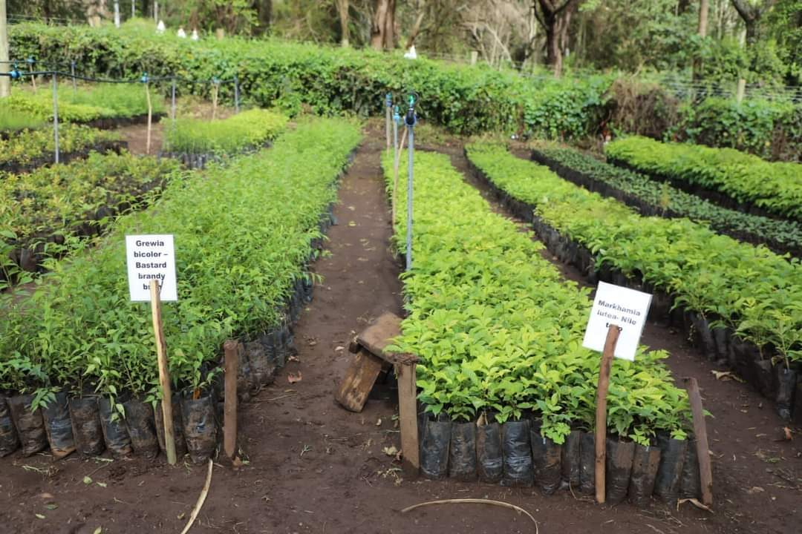
How the Ecolive model can be adapted and replicated across regions facing similar environmental challenges — for global impact.
Read more →From the Ground Up
Moments from the field — restoring landscapes, growing livelihoods, and empowering communities across Kenya.
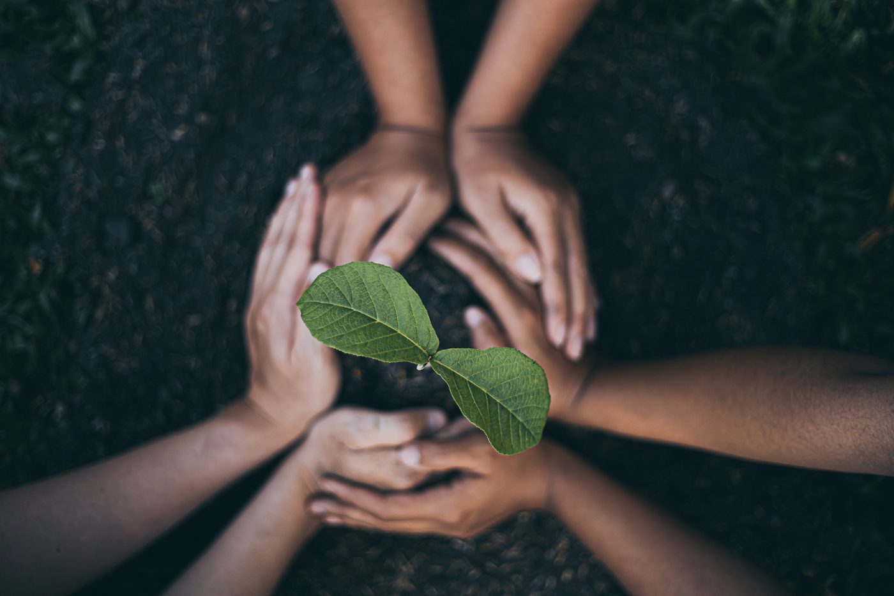
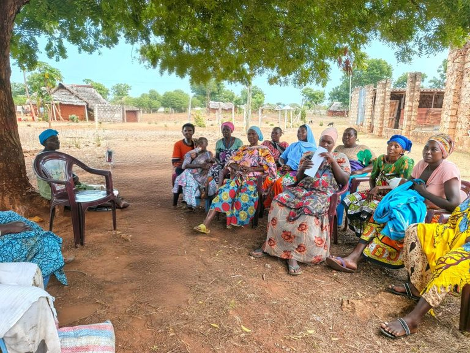
Global Alignment
Our Identity
Partner with us, volunteer, or plant your tree in the 366 Tree Challenge. Every action on land protects our future at sea.